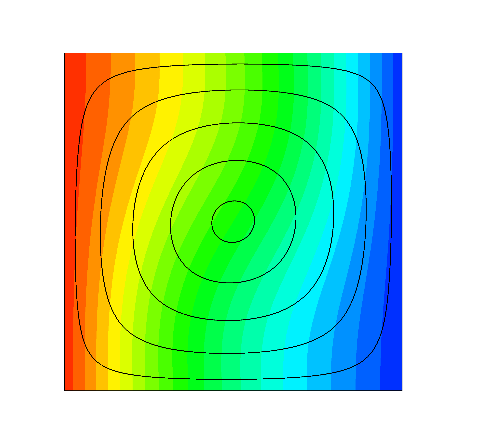
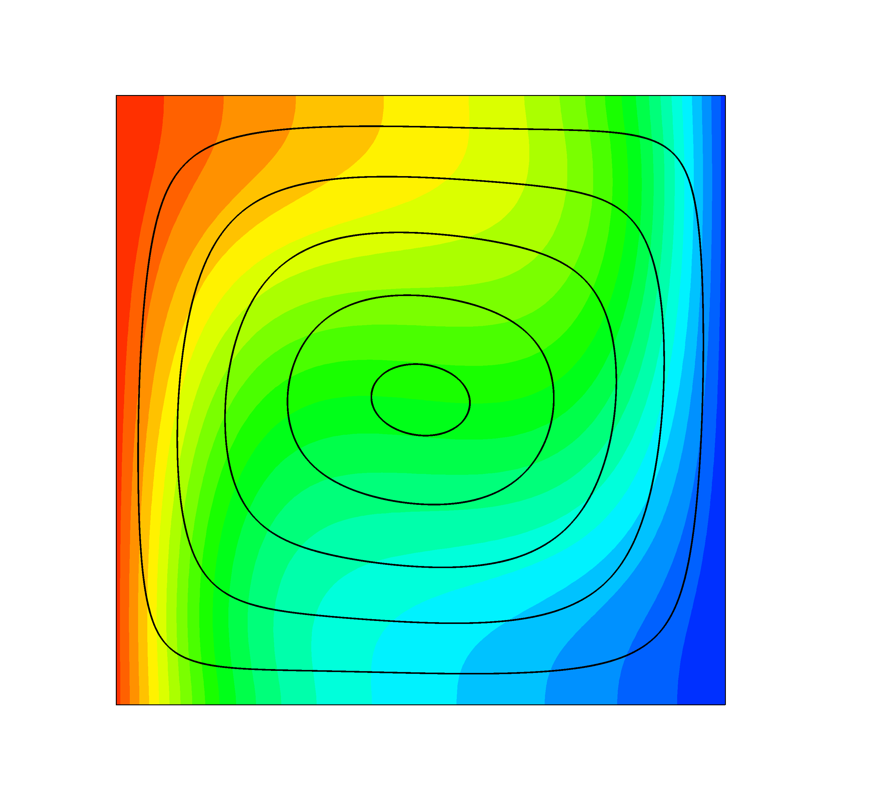
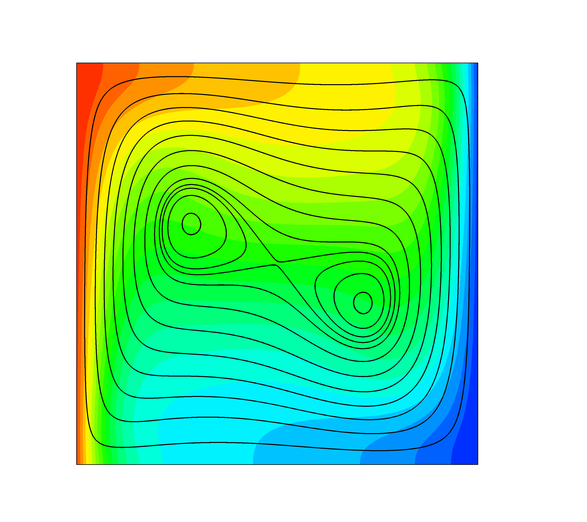
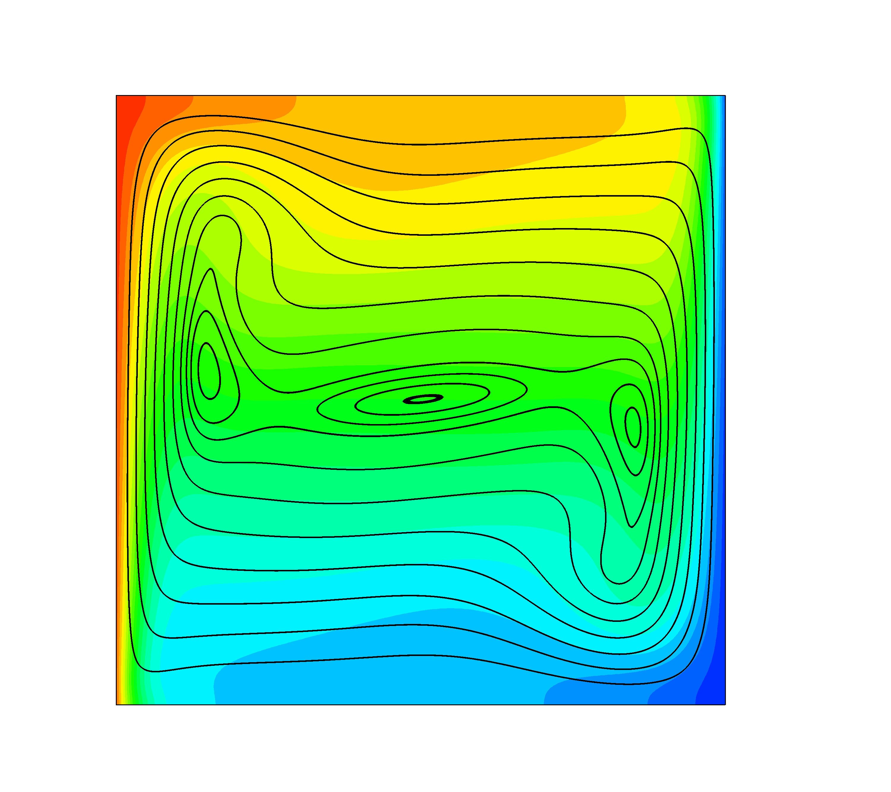
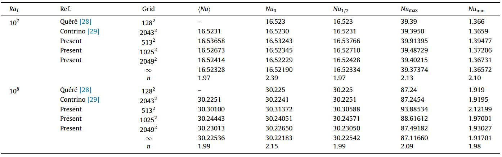

Lattice Boltzmann Method (LBM) - Thermal convection
In incompressible thermal flows, temperature variation will cause density variation thus resulting in buoyancy effect. Following the Boussinesq approximation, the temperature can be treated as a passive scalar, and its influence to the velocity field is through the buoyancy term.
Buoyancy driven cavityThe horizontal walls are insulated, and the vertical sides are at temperature.
Below is contour of temperature and stremline at Ra=103, 104, 105, 106 (from left to right), which agrees with Davis, 1983, Int. J. Numer. Methods Fluids.
   Benchmark results for Nusselt numbers at at Ra=107 and 108 are provided as below: (Ref: Xu, 2017, Int. J. Heat Mass Transf.)
Rayleigh Benard convection
Rayleigh Benard (RB) convection occurs in a plane horizontal layer of fluid heated from bottom.
Below is contour of temperature contour for Ra=107. Periodic boundary condition in horizontal direction.